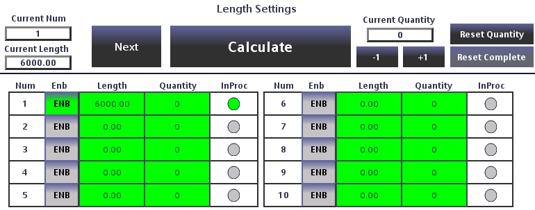
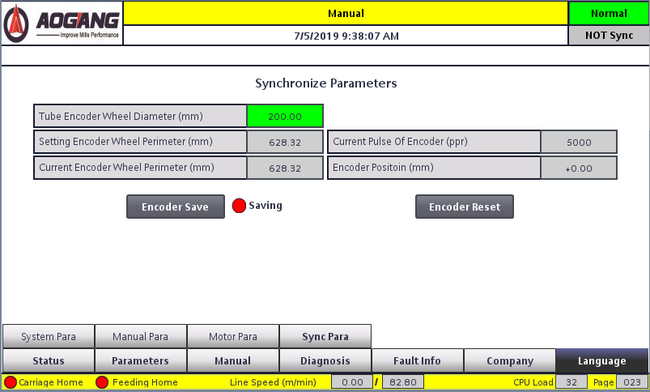

Instrucciones de operación
Procedimientos de campo desde el encendido hasta la producción automática, incluida la prueba de par, programas, puntos de memoria y sincronismo del encoder.
3.1 Procedimiento de encendido
- Con la alimentación externa conectada, cierre el breaker del gabinete principal. Se enciende la lámpara de potencia del frente. Pulse el botón de potencia del tablero para arrancar el sistema. La lámpara del gabinete permanece encendida mientras el gabinete está alimentado.
- Pulse el mismo botón de potencia otra vez para apagar el sistema mientras está energizado.
- La inicialización tarda unos 60 segundos. Las lámparas Drive, Feed y Sawing parpadean y luego quedan fijas cuando está listo. No opere antes: el comportamiento posterior puede ser anómalo.
- Si el amarre es hidráulico, arranque la central hidráulica después de la inicialización.
3.2 Avance y retroceso manual
En Manual, el KK-5S permite jog del carro y del eje de avance desde los selectores del tablero o la página Manual Operation.
- Carro: mantenga el selector de arrastre o Manual Feed Forward / Reverse en el HMI. Suelte para parar. Arranques y paros van en rampa para proteger el motor.
- Eje de avance: mantenga el selector de avance o Feed Forward / Feed Back en el HMI. Suelte para parar.
3.3 Llevar al origen el arrastre y el avance
El eje de arrastre y el de avance deben estar en origen antes de Simulación o Automático.
3.3.1 Origen de arrastre
El origen es la posición tras encontrar el límite posterior. Si ese interruptor está fallado, use el origen manual de arrastre.
Drive Home: pulse Drive Home en el tablero o en la página Manual Operation.
- El carro se mueve hacia origen y desacelera hasta parar en el límite posterior.
- Cuando la velocidad es cero avanza la distancia de origen de arrastre configurada.
- La posición actual queda como origen de arrastre.
Origen manual: pulse Drag Manual Home en la página Manual Operation. La posición actual se usa como origen en ciclos posteriores de simulación/automático. Deje espacio suficiente de carrera.
Reset detiene un origen en curso; el carro se queda donde está.
3.3.2 Origen de avance
El origen de avance es el punto de contacto disco–material. Debe haber material en el utillaje; si no, use Feed Manual Home.
Pulse Feed Home en el tablero o en el HMI.
- El utillaje amarra.
- El avance se repliega al límite posterior de avance y para.
- El avance sale hasta que el disco toca la pieza y para.
- El avance vuelve al offset de origen; esa posición es el origen de avance.
3.4 Prueba de par de avance
Tras mucho tiempo en marcha, el origen de avance puede necesitar más par. Haga la prueba de par en la página Machine Learning / Manual Parameters para que el origen siga funcionando.

- Pulse Feed Torque Test. Cuando Feed Torque Limit Enabled se ponga verde, pulse Manual Feed Forward.
- El eje de avance se mueve al límite de par de origen. Si encuentra resistencia excesiva (circuito de grasa seco, o disco contra material) para y Feed Torque Limit Reached se pone verde.
- Pulse Feed Torque Test otra vez para que la lámpara de enable pase a rojo, saque el disco del utillaje con jog, cargue material y haga un origen normal.
El par de origen de avance es típico 1–15 %. Si un valor alto aún no mueve el eje, revise la lubricación antes de subirlo otra vez.
3.5 Amarre manual
Use el amarre manual para probar el utillaje. Abra el aire si es neumático, o arranque la central si es hidráulico. En Manual, gire el selector a Clamp o Release.
- Tras amarrar, vea si el material aún se mueve.
- Tras un corte manual, empuje la pieza cortada hacia adentro desde ambos extremos del utillaje y ajústela. Un escalón en la junta indica error angular del utillaje.
3.6 Corte manual
El modo Manual hace un corte estático. Úselo para longitudes sueltas y para juzgar la calidad de corte.
Antes del corte:
- El sistema está en Manual.
- El amarre hidráulico (si hay) está en marcha y a presión.
- El eje de avance fue originado y está en origen.
- El tren formador no se moverá de ninguna forma. Un movimiento adelante o atrás durante un corte estático puede destruir el disco.
- Los parámetros de tubo están correctos.
- Hay material en el utillaje.
Pulse Manual Cut en el tablero o en el HMI. Secuencia: amarre → motor de sierra on → retardo 2 s → avance → retorno → desamarre → motor de sierra off. Si el utillaje no sujeta, el corte suena mal o arranca el tren, pulse paro de emergencia para proteger el disco.
3.7 Activar simulación
La simulación mueve la sierra volante con un eje virtual y el encoder de material desconectado. Varíe la velocidad virtual para ver el carro y aislar fallas eléctricas o mecánicas.
Preparar:
- Encendido terminado; selector en Manual.
- Absolutamente sin material en el utillaje (incluido fleje que venga del tren).
- Eje de arrastre originado y en origen.
- Eje de avance originado o con origen manual, en posición segura.
- El tren formador no se moverá. Un movimiento del tren en simulación puede volcar el carro de sierra.
- Longitud y parámetros de tubo correctos.
- Fije la velocidad de simulación.
Gire el selector a Simulation. Gira el disco, el eje virtual avanza a la velocidad fijada, el carro sigue, el avance corta, el carro termina la carrera de ida y vuelve a origen para el siguiente ciclo. Gire el selector a Manual para salir; el carro termina el corte en curso y origina antes de dejar la simulación.
3.8 Activar el modo automático
Automático es producción en línea: longitud y velocidad salen del encoder de material.
Preparar:
- Encendido terminado; selector en Manual.
- El fleje del tren está en el utillaje de amarre.
- Aire o hidráulico del amarre está en marcha y funciona.
- Eje de arrastre originado y en origen.
- Eje de avance originado y en origen.
- Longitud y parámetros de tubo correctos.
Gire el selector a Automatic. Arranca el disco, el encoder registra la posición del fleje y, al arrancar el tren, el carro sigue, el avance corta, el carro termina la carrera de ida y vuelve a origen para la pieza siguiente.
3.9 Configurar programas de producción
La longitud se fija con diez programas internos. Cada uno tiene longitud, cantidad y habilitación.

En producción automática el sistema recorre las órdenes habilitadas en número ascendente. Una lámpara In Production encendida marca la orden activa; el fondo verde claro marca órdenes terminadas. Botones encima de la lista:
- Calculate — calcula la velocidad máxima viable del tren a partir del tiempo de corte y la longitud de la orden seleccionada. El resultado aparece en las páginas principal, de tubo y de simulación. En marcha también permite recortar la longitud actual sin parar.
- Next Order — en Automático o Simulación, salta a la siguiente orden habilitada sin parar ni cambiar la cantidad consignada.
- Clear Production Quantity / Reset Quantity — pone a cero las piezas ya hechas.
- Clear Completed Orders / Reset Complete — solo en Manual; borra las órdenes terminadas.
3.10 Puntos de memoria
En Automático el controlador registra la longitud de la pieza actual. Tras una salida normal, un apagón o una falla, al volver a Automático ofrece reanudar desde la última parada o desde origen.
Pulse Continue: el carro se acerca a la posición guardada en la última salida de Automático. Se ignoran los pulsos del encoder hasta que llega: no cambie la posición del fleje. Luego arranque el tren. Pulse Restart (o arranque el tren) para omitirlo; el recuadro se cierra cuando cambia la longitud de material.
3.11 Piezas cortas y largas
Corte una longitud distinta de la consigna en Simulación o Automático para sacar chatarra o zona de costura.
3.11.1 Pieza corta
Requisitos: Simulación o Automático; velocidad ≤ 60 % de la máxima de línea; pulse Manual Cut. Luego:
- El controlador lee el sentido del carro.
- Adelante: desacelera, origen a alta velocidad, retoma producción.
- Retorno: acelera al máximo de retorno, origina, retoma producción.
3.11.2 Pieza larga
Gire el selector de amarre a amarrado en Simulación o Automático. Luego:
- El controlador lee el sentido del carro.
- Adelante: desacelera, origen rápido, espera.
- Retorno: acelera al máximo de retorno, origina, espera.
- Gire el selector a suelto.
- El carro retoma el seguimiento.
3.12 Medición de sincronismo
El sincronismo carro–fleje es necesario para la precisión de longitud y la vida del disco. El desgaste tras la puesta en marcha puede desincronizarlos. Revise periódicamente y corrija con Material Speed Sensor Wheel Diameter (diámetro de la rueda del encoder de material).

- Mida el diámetro de la rueda de velocidad con calibre y cárguelo como Material Speed Measurement Wheel Diameter (referencia inicial).
- Pase un tramo corto de material por el amarre, pare y haga Feed to Home.
- Pulse Manual Cut. Tras el corte, la longitud actual de material se pone a cero.
- Arranque el tren y deje pasar unos 2 m de fleje.
- Pulse Material Cut en el HMI hasta que se ponga verde: la longitud actual no se pondrá a cero tras el siguiente corte.
- Pulse Manual Cut otra vez.
- Mida con cinta la longitud real cortada. Cárguela como Actual Material Length y el espesor actual del disco.
- Pulse Data Calculation. El diámetro de rueda se recalcula con el ensayo.
- Repita los pasos 4 a 7 hasta que longitud real más espesor de disco iguale la longitud de material mostrada.